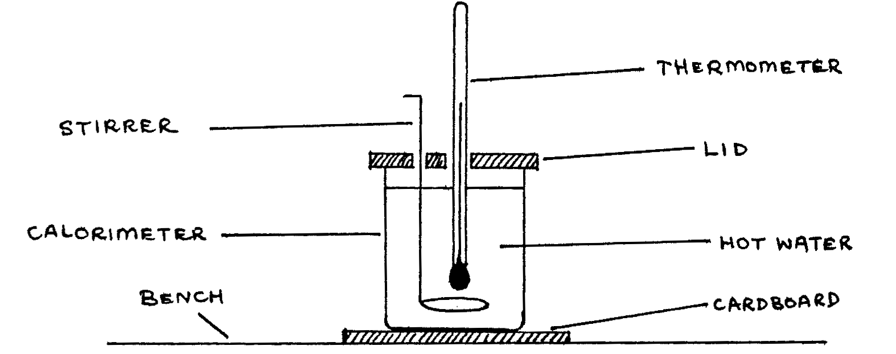

85-Q2: Surface Characteristics and Cooling¶
Time \(1 \frac{1}{2}\) hr.
Apparatus¶
Copper calorimeter with lid; thermometer (\(0-100\text{°C}\)); stirrer; cardboard base; stopclock; kerosene or diesel burner; stand and clamp; graduated beaker; hot water; graph paper.
The aim of this experiment is to investigate how the nature of the surface of a calorimeter affects the rate of loss of heat. Proceed as follows:
- You are provided with a beaker which is nearly full of hot water and a polished copper calorimeter. Nearly fill the calorimeter with the hot water, whose temperature should initially be above \(80\text{°C}\), and set it up on the bench as illustrated in the figure below.

- Stir the hot water in the calorimeter constantly and record the temperature of the water after every 1.0 minute with the aid of a stop clock. Continue recording temperature \(\theta\) in this way for \(15\) minutes and tabulate \(\theta\) and time \(t\). (6 Marks)
- Empty the water in the calorimeter into a measuring cylinder and record the volume \(V\). Blacken the external surface of the calorimeter using smoke from the kerosene or diesel burner provided. Now pour volume \(V\) of hot water, whose temperature should initially be above \(80\text{°C}\), into the blackened calorimeter and again set it up on the bench as illustrated in the figure above.
- Repeat the procedure outlined in (b) above. (6 marks)
- Using the same axes, plot a cooling curve for the polished calorimeter together with its contents and another cooling curve for the blackened calorimeter together with its contents. (18 marks)
- If \(R_p\) represents the rate at which the polished calorimeter
and contents lose heat and \(R_b\) represents the rate at which
the blackened calorineter and contents lose heat, determine the
ratio \(\frac{R_p}{R_b}\) at:
- 78°C
- 70°C
Comment on your results. (20 marks)